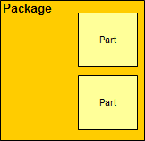
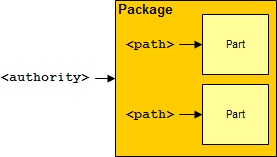
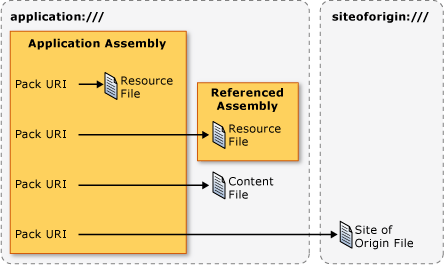

URI типа "pack" в WPF
В Windows Presentation Foundation (WPF), универсальные идентификаторы ресурсов (URI) используются для идентификации и загрузки файлов несколькими способами, включая следующие:
Указание UI для отображения при первом запуске приложения.
Загрузка изображений.
Переход по страницам.
Загрузка неисполняемых файлов данных.
Кроме того URI может использоваться для идентификации и загрузки файлов из различных расположений, включая следующие:
Текущая сборка.
Указанная ссылками сборка.
Расположение, связанное со сборкой.
Исходный узел приложения.
Для обеспечения согласованного механизма идентификации и загрузки этих типов файлов из этих расположений, WPF использует расширяемость схема URI упаковки. В этом разделе представлен обзор схемы, описывается формирование пакета URI для разнообразных сценариев, рассматриваются абсолютное и относительное URI и URI разрешение как использовать пакет URI из обоих разметки и код.
Схема URI типа "pack"
Пакет URI используется схема спецификации Open Packaging Conventions спецификации (OPC), которая описывает модель для организации и идентификации содержимого. Основными элементами этой модели являются пакеты и элементы, где пакета — это логический контейнер для одного или более логическими частей. Эта структура показана на следующем рисунке.

Для определения частей, спецификации OPC используется расширяемость RFC 2396 (универсальных кодов ресурса (URI): Общий синтаксис) для определения в пакете URI схемы.
Схемы, который задается параметром URI определяется его префиксом; http, ftp и file, известных примеров. Пакет URI схема использует «pack» в качестве схемы и содержит два компонента: центр и путь. Ниже приведен формат для пакета URI.
пакет: / /центра/путь
Центра указывает тип пакета, которое находится элемент, пока путь указывает расположение части внутри пакета.
Эта концепция показана на следующей схеме:

Пакеты и элементы аналогичны приложениям и файлам. Приложение (пакет) может содержать один или несколько файлов (элементов), в том числе:
Файлы ресурсов, скомпилированные в локальную сборку.
Файлы ресурсов, скомпилированные в сборку, на которую указывает ссылка.
Файлы ресурсов, скомпилированные в ссылающуюся сборку.
Файлы содержимого.
Файлы исходного узла.
Для доступа к этим типам файлов, WPF поддерживает два центра: application: / / / и siteoforigin: / / /. Центр application:/// определяет файлы данных приложения, известные во время компиляции, включая файлы ресурсов и файлы содержимого. Центр siteoforigin:/// определяет файлы исходного узла. На следующем рисунке показана область каждого центра.

Note
Компонент центра пакета URI является встроенным URI , указывающий на пакет и должен соответствовать стандарту RFC 2396. Кроме того, символ "/" необходимо заменить символом ",", и необходимо обособлять escape-символами такие зарезервированные символы, как "%" и "?". Подробные сведения см. в OPC.
В следующих разделах рассматривается построение пакета URI с использованием этих двух центров с соответствующими путями для идентификации ресурсов, содержимого и файлы исходного узла.
URI типа "pack" для файла ресурсов
Файлы ресурсов настраиваются как MSBuildResource элементы и компилируются в сборки. WPF поддерживает формирование пакета URI может использоваться для идентификации файлов ресурсов, которые компилируются в локальную сборку или компилируется в сборку, на который ссылается локальная сборка.
Файл ресурсов локальной сборки
Пакет URI для ресурса файла, который компилируется в локальную сборку использует следующие центр и путь:
Центр: application:///.
Путь: Имя файла ресурсов, включая его путь относительно корневой папки проекта локальной сборки.
В следующем примере показано пакете URI для XAML файл ресурсов, который находится в корневой папке проекта локальной сборки.
pack://application:,,,/ResourceFile.xaml
В следующем примере показано пакете URI для XAML файла ресурсов, который находится во вложенной папке проекта локальной сборки.
pack://application:,,,/Subfolder/ResourceFile.xaml
Файл ресурсов указанной ссылками сборки
Пакет URI для ресурса файла, который компилируется в сборку использует следующие центр и путь:
Центр: application:///.
Путь: Имя файла ресурсов, который компилируется в сборку. Путь должен соответствовать следующему формату:
AssemblyShortName{; Версия] {; Открытый ключ]; component /путь
AssemblyShortName — краткое имя для указанной ссылками сборки.
;Version [необязательно] — версия указанной ссылками сборки, которая содержит файл ресурсов. Используется при загрузке двух или более указанных ссылками сборок с одинаковым кратким именем.
;PublicKey [необязательно]: открытый ключ, который использовался для подписи указанной ссылками сборки. Используется при загрузке двух или более указанных ссылками сборок с одинаковым кратким именем.
;component: указывает, что на упоминаемую сборку ссылается локальная сборка.
/Path: имя файла ресурсов, включая его путь относительно корневой папки проекта указанной ссылками сборки.
В следующем примере показано пакете URI для XAML файл ресурсов, который находится в корневой папке проекта указанной ссылками сборки.
pack://application:,,,/ReferencedAssembly;component/ResourceFile.xaml
В следующем примере показано пакете URI для XAML файла ресурсов, который находится во вложенной папке проекта указанной ссылками сборки.
pack://application:,,,/ReferencedAssembly;component/Subfolder/ResourceFile.xaml
В следующем примере показано пакете URI для XAML файл ресурсов, который находится в папке корневой папки проекта ссылочной сборки конкретной версии.
pack://application:,,,/ReferencedAssembly;v1.0.0.1;component/ResourceFile.xaml
Обратите внимание, что пакет URI синтаксис для файлов ресурсов указанной ссылками сборки может использоваться только вместе с приложением: / / / центра. Например, следующее не поддерживается в WPF.
pack://siteoforigin:,,,/SomeAssembly;component/ResourceFile.xaml
URI типа "pack" для файла содержимого
Пакет URI для файла содержимого использует следующие центр и путь:
Центр: application:///.
Путь: Имя файла содержимого, включая его путь относительно расположения файла системы основной исполняемой сборки приложения.
В следующем примере показано пакете URI для XAML содержимого файла, расположенного в той же папке, что и исполняемая сборка.
pack://application:,,,/ContentFile.xaml
В следующем примере показано пакете URI для XAML содержимого файла, расположенного во вложенной папке относительно исполняемой сборки приложения.
pack://application:,,,/Subfolder/ContentFile.xaml
Note
HTML файлы содержимого не может перемещаться. URI Схема поддерживает переход только к HTML файлы, расположенные на исходном узле.
URI типа "pack" исходного узла
Пакет URI для исходного узла файла использует следующие центр и путь:
Центр: siteoforigin:///.
Путь: Имя узла исходного файла, включая его путь относительно расположения, из которого была запущена исполняемая сборка.
В следующем примере показано пакете URI для XAML сайта из исходного файла, хранящегося в расположении, из которого запускается исполняемая сборка.
pack://siteoforigin:,,,/SiteOfOriginFile.xaml
В следующем примере показано пакете URI для XAML сайта из исходного файла, хранящегося во вложенной папке относительно расположения, из которого запускается исполняемая сборка приложения.
pack://siteoforigin:,,,/Subfolder/SiteOfOriginFile.xaml
Файлы подкачки
XAML файлы, которые настроены как MSBuildPage элементы компилируются в сборки таким же образом, как файлы ресурсов. Следовательно MSBuildPage элементов можно идентифицировать с помощью пакета URI для файлов ресурсов.
Типы XAML файлы, которые обычно настраиваются как MSBuildPage элементы имеют одно из следующих корневых элементов:
Абсолютные и относительные URI типа "pack"
Полный пакет URI включает в себя схему, центр и путь, и он считается абсолютным пакет URI. Для разработчиков, упрощения XAML элементы обычно допускают настройку соответствующих атрибутов в относительный пакет URI, который включает только путь.
Например, рассмотрим следующий абсолютный пакет URI для файла ресурсов в локальной сборке.
pack://application:,,,/ResourceFile.xaml
Относительный пакет URI , ссылающийся на этот ресурс файла будет следующим.
/ResourceFile.xaml
Note
Поскольку файлы исходного узла не связаны со сборками, они могут ссылаться только на абсолютный пакет URI.
По умолчанию относительный пакет URI считается относительно расположения разметки или кода, содержащий ссылку. Если используется предварительная обратная косая черта, однако относительный пакет для URI рассматривается относительно корня приложения. Например, рассмотрим следующую структуру проекта.
App.xaml
Page2.xaml
\SubFolder
+ Page1.xaml
+ Page2.xaml
Если Page1.xaml содержит URI , ссылающийся на корневой\SubFolder\Page2.xaml, ссылка может использовать следующий относительный пакет URI.
Page2.xaml
Если Page1.xaml содержит URI , ссылающийся на корневой\Page2.xaml, ссылка может использовать следующий относительный пакет URI.
/Page2.xaml
Разрешение URI типа "pack"
Формат пакета URI делает возможным для пакета URI для различных типов файлов может выглядеть одинаково. Например, рассмотрим следующий абсолютный пакет URI.
pack://application:,,,/ResourceOrContentFile.xaml
Этот абсолютный пакет URI может ссылаться на файлы ресурсов в локальной сборке или файл содержимого. То же самое верно для следующего относительного URI.
/ResourceOrContentFile.xaml
Чтобы определить тип файла, типа pack URI ссылается на, WPF разрешает URI для файлов ресурсов в локальных сборках и файлы содержимого с помощью следующих эвристических методов:
Проверка метаданных сборки для AssemblyAssociatedContentFileAttribute атрибут, соответствующий пакет URI.
Если AssemblyAssociatedContentFileAttribute обнаружении атрибута путь пакета URI ссылается на файл содержимого.
Если AssemblyAssociatedContentFileAttribute атрибут не найден, проверки файлы ресурсов набора, которые компилируются в локальную сборку.
Если файл ресурсов, которое соответствует пути пакета URI найден, путь пакета URI ссылается на файл ресурсов.
Если ресурс не найден, то созданный Uri является недопустимым.
URI разрешения не применяется для URI , со следующими разделами:
Файлы содержимого в связанные сборки: не поддерживаются следующие типы файлов WPF.
Внедренные файлы в указанных ссылками сборках: URI , которые идентифицируют их являются уникальными, поскольку они включают в себя имя сборки, на которые имеются ссылки и
;componentсуффикс.Файлы исходного узла: URI , которые идентифицируют их являются уникальными, поскольку они являются только такие файлы, которые могут быть идентифицированы пакетом URI , содержащего центр siteoforigin: / / / центра.
Единственное упрощение, которое пакет URI поддерживает разрешение для кода в некоторой степени зависеть от расположения файлов ресурсов и содержимого. Например, если у вас есть файл ресурсов в локальной сборке, который перенастроен в файл содержимого, пакет URI для ресурса останется таким же, как и код, который использует пакет URI.
Программирование с использованием URI типа "pack"
Многие WPF классы реализуют свойства, которые могут быть заданы с помощью пакета URI, в том числе:
Эти свойства можно задать из разметки и кода. В этом разделе демонстрируются основные конструкции для разметки и кода, а также приводятся примеры наиболее распространенных сценариев.
Использование URI типа "pack" в разметке
Пакет URI задается в разметке путем настройки элемента атрибута с помощью пакета URI. Пример:
<element attribute="pack://application:,,,/File.xaml" />
Таблица 1 демонстрирует различные абсолютный пакет URI , можно указывать в разметке.
Таблица 1. Абсолютный пакет URI типа в разметке
| Файл | Абсолютный пакет URI |
|---|---|
| Файл ресурсов — локальная сборка | "pack://application:,,,/ResourceFile.xaml" |
| Файл ресурсов в подпапке — локальная сборка | "pack://application:,,,/Subfolder/ResourceFile.xaml" |
| Файл ресурсов — указанная ссылками сборка | "pack://application:,,,/ReferencedAssembly;component/ResourceFile.xaml" |
| Файл ресурсов в подпапке указанной ссылками сборки | "pack://application:,,,/ReferencedAssembly;component/Subfolder/ResourceFile.xaml" |
| Файл ресурсов в указанной ссылками сборке с несколькими версиями | "pack://application:,,,/ReferencedAssembly;v1.0.0.0;component/ResourceFile.xaml" |
| Файл содержимого | "pack://application:,,,/ContentFile.xaml" |
| Файл содержимого в подпапке | "pack://application:,,,/Subfolder/ContentFile.xaml" |
| Файл исходного узла | "pack://siteoforigin:,,,/SOOFile.xaml" |
| Файл исходного узла в подпапке | "pack://siteoforigin:,,,/Subfolder/SOOFile.xaml" |
Таблица 2 демонстрирует различные относительные pack URI , можно указывать в разметке.
Таблица 2. Относительный пакет URI типа в разметке
| Файл | Относительный пакет URI |
|---|---|
| Файл ресурсов в локальной сборке | "/ResourceFile.xaml" |
| Файл ресурсов в подпапке — локальная сборка | "/Subfolder/ResourceFile.xaml" |
| Файл ресурсов в указанной ссылками сборке | "/ReferencedAssembly;component/ResourceFile.xaml" |
| Файл ресурсов в подпапке указанной ссылками сборки | "/ReferencedAssembly;component/Subfolder/ResourceFile.xaml" |
| Файл содержимого | "/ContentFile.xaml" |
| Файл содержимого в подпапке | "/Subfolder/ContentFile.xaml" |
Использование URI типа "pack" в коде
Укажите пакет URI в коде путем создания экземпляра Uri класса и передачи URI в качестве параметра конструктора. Это показано в следующем примере.
Uri uri = new Uri("pack://application:,,,/File.xaml");
По умолчанию Uri класс считает, что пакет URI абсолютным. Следовательно, возникает исключение при создании экземпляра класса Uri класс создается с помощью относительных пакета URI.
Uri uri = new Uri("/File.xaml");
К счастью Uri(String, UriKind) перегрузки Uri конструктор классов принимает параметр типа UriKind чтобы можно было указать ли пакет URI является абсолютным или относительным.
// Absolute URI (default)
Uri absoluteUri = new Uri("pack://application:,,,/File.xaml", UriKind.Absolute);
// Relative URI
Uri relativeUri = new Uri("/File.xaml",
UriKind.Relative);
Следует указать только Absolute или Relative когда вы будете уверены, что указанный пакет URI — одно из них. Если вы не знаете тип пакета URI , например, если пользователь вводит пакет, используемый URI во время выполнения, используйте RelativeOrAbsolute вместо этого.
// Relative or Absolute URI provided by user via a text box
TextBox userProvidedUriTextBox = new TextBox();
Uri uri = new Uri(userProvidedUriTextBox.Text, UriKind.RelativeOrAbsolute);
Таблице 3 показаны различные относительные pack URI , можно указать в коде с помощью System.Uri.
Таблица 3. Абсолютный пакет URI типа в коде
| Файл | Абсолютный пакет URI |
|---|---|
| Файл ресурсов — локальная сборка | Uri uri = new Uri("pack://application:,,,/ResourceFile.xaml", UriKind.Absolute); |
| Файл ресурсов в подпапке — локальная сборка | Uri uri = new Uri("pack://application:,,,/Subfolder/ResourceFile.xaml", UriKind.Absolute); |
| Файл ресурсов — указанная ссылками сборка | Uri uri = new Uri("pack://application:,,,/ReferencedAssembly;component/ResourceFile.xaml", UriKind.Absolute); |
| Файл ресурсов в подпапке указанной ссылками сборки | Uri uri = new Uri("pack://application:,,,/ReferencedAssembly;component/Subfolder/ResourceFile.xaml", UriKind.Absolute); |
| Файл ресурсов в указанной ссылками сборке с несколькими версиями | Uri uri = new Uri("pack://application:,,,/ReferencedAssembly;v1.0.0.0;component/ResourceFile.xaml", UriKind.Absolute); |
| Файл содержимого | Uri uri = new Uri("pack://application:,,,/ContentFile.xaml", UriKind.Absolute); |
| Файл содержимого в подпапке | Uri uri = new Uri("pack://application:,,,/Subfolder/ContentFile.xaml", UriKind.Absolute); |
| Файл исходного узла | Uri uri = new Uri("pack://siteoforigin:,,,/SOOFile.xaml", UriKind.Absolute); |
| Файл исходного узла в подпапке | Uri uri = new Uri("pack://siteoforigin:,,,/Subfolder/SOOFile.xaml", UriKind.Absolute); |
Таблица 4 демонстрирует различные относительные pack URI , можно указать в коде с помощью System.Uri.
Таблица 4. Относительный пакет URI типа в коде
| Файл | Относительный пакет URI |
|---|---|
| Файл ресурсов — локальная сборка | Uri uri = new Uri("/ResourceFile.xaml", UriKind.Relative); |
| Файл ресурсов в подпапке — локальная сборка | Uri uri = new Uri("/Subfolder/ResourceFile.xaml", UriKind.Relative); |
| Файл ресурсов — указанная ссылками сборка | Uri uri = new Uri("/ReferencedAssembly;component/ResourceFile.xaml", UriKind.Relative); |
| Файл ресурсов в подпапке — указанная ссылками сборка | Uri uri = new Uri("/ReferencedAssembly;component/Subfolder/ResourceFile.xaml", UriKind.Relative); |
| Файл содержимого | Uri uri = new Uri("/ContentFile.xaml", UriKind.Relative); |
| Файл содержимого в подпапке | Uri uri = new Uri("/Subfolder/ContentFile.xaml", UriKind.Relative); |
Типичные сценарии URI типа "pack"
Предыдущих разделах обсуждались способы создания пакета URI для идентификации ресурсов, содержимого и файлы исходного узла. В WPF, эти конструкции используются различными способами, и в следующих разделах описаны некоторые общие способы использования.
Указание пользовательского интерфейса для отображения при запуске приложения
StartupUri Указывает первый UI должна отображаться при WPF приложение запускается. Для автономных приложений UI может быть окном, как показано в следующем примере.
<Application
xmlns="http://schemas.microsoft.com/winfx/2006/xaml/presentation"
StartupUri="MainWindow.xaml" />
Автономные приложения и XAML-приложения браузера (XBAP) можно также указать страницу в качестве начального пользовательского интерфейса, как показано в следующем примере.
<Application
xmlns="http://schemas.microsoft.com/winfx/2006/xaml/presentation"
StartupUri="HomePage.xaml" />
Если приложение — это автономное приложение, и страница указана с StartupUri, WPF открывает NavigationWindow для размещения страницы. Для XBAP, страница будет отображена в браузере основного приложения.
Переход на страницу
В следующем примере показано, как перейти на какую-либо страницу.
<Page
xmlns="http://schemas.microsoft.com/winfx/2006/xaml/presentation"
WindowTitle="Page With Hyperlink"
WindowWidth="250"
WindowHeight="250">
<Hyperlink NavigateUri="UriOfPageToNavigateTo.xaml">
Navigate to Another Page
</Hyperlink>
</Page>
Дополнительные сведения о различных способах перехода в WPF, см. в разделе Общие сведения о переходах.
Указание значка окна
В следующем примере показано использование URI для указания значка окна.
<Window
xmlns="http://schemas.microsoft.com/winfx/2006/xaml/presentation"
xmlns:x="http://schemas.microsoft.com/winfx/2006/xaml"
x:Class="SDKSample.MainWindow"
Icon="WPFIcon1.ico">
</Window>
Дополнительные сведения см. в разделе Icon.
Загрузка файлов изображения, аудио и видео файлов
WPF позволяет приложениям использовать разнообразные типы носителей, все из которых можно определить и загрузить с помощью пакета URI, как показано в следующих примерах.
<MediaElement Stretch="Fill" LoadedBehavior="Play" Source="pack://siteoforigin:,,,/Media/bee.wmv" />
<MediaElement Stretch="Fill" LoadedBehavior="Play" Source="pack://siteoforigin:,,,/Media/ringin.wav" />
<Image Source="Images/Watermark.png" />
Дополнительные сведения о работе с мультимедийным содержимым см. в разделе графика и мультимедиа.
Загрузка словаря ресурсов с исходного узла
Словари ресурсов (ResourceDictionary) можно использовать для поддержки тем приложения. Одним из способов создания тем и управления ими является создание нескольких тем в качестве словарей ресурсов, расположенных в исходном узле приложения. Это позволяет добавлять и обновлять темы без повторной компиляции и развертывания приложения. Словари ресурсов можно определить и загрузить с помощью пакета URI, как показано в следующем примере.
<Application
xmlns="http://schemas.microsoft.com/winfx/2006/xaml/presentation"
StartupUri="HomePage.xaml">
<Application.Resources>
<ResourceDictionary Source="pack://siteoforigin:,,,/PageTheme.xaml" />
</Application.Resources>
</Application>
Обзор тем в WPF, см. в разделе Стилизация и использование шаблонов.